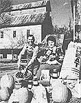
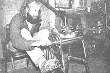

Eleven years ago Charles and Louise Tillotson purchased 400 acres of fertile Indiana land, on the banks of a scenic and placid stretch of the Ohio River, in preparation for their retirement. It was to be their retreat, a refuge from the delirium of the big city ...but the couple soon discovered that madness will sometimes reach into the country, too.
In January of 1976, representatives from the Indianapolis Power and Light Co. (IPALCO) informed the Tillotsons that the utility needed their land as a site for its new power plant. Though the couple had no desire to sell the farm, they found that they had no choice in the matter ...because Indiana's eminent domain laws give utilities the right to take whatever land they want. And, since there's no state controlling board, folks like Charles and Louise have no way to appeal an IPALCO decision.
So the Tillotsons testified before the state legislature in an attempt to reform the antiquated laws, but the situation remained essentially unchanged ...and when the couple arranged for their 125-year-old farmhouse to be listed on the National Register of Historical Places, IPALCO simply designed a plant that could be constructed around the dwelling. Finally-two years ago-the utility sought a court order to force the Tillotsons from their land ...leaving only the value of the seized property still pending in the courts.
Ironically, IPALCO has yet to build on the proposed site, since the use of electricity in the area has fallen far below expected levels. But if the plant is constructed, Charles and Louise note sadly, the river valley is sure to become an energy corridor that will ship power miles away and strew pollution and ruin all along its path.-Dale Maharidge.
BILL AND MARIE CARIGNAN:
READYVILLE MILLS
When Bill and Marie Carignan purchased Readyville Mills in 1973, the 161year-old company was in the process of some extensive restoration. Traditional buhrstones-operated by means of a water-powered turbine had been installed as a replacement for the more modern steel rollers, allowing the millers to grind grain as it had been ground a century before. But there was much work left for the Carignans to tackle ...and though the business prospered, the renovation expenses quickly mounted to a point far beyond the family's means.
Then, in 1977, Bill and Marie were offered an opportunity to sell the historic business to a man who had the resources necessary to complete the restoration ...and-reluctantly-they went through with the sale. With the money from that transaction, the couple was able to set up two bakeries, selling flour, grain, meal, grits, cereal, bran, pancake mix, homebaked bread, and cheese ...all made from ingredients produced within their own community. Meanwhile, the family .watched the mill closely to see that reconstruction went as planned ...and they were sorry to see that it didn't. Instead, repairs-and eventually business -came to a halt ...so the Carignans set out to buy back the property.
Bill and Marie hope to raise the funds they'll need through the sale of the family's whole grain bakery products and a cookbook called From the Miller's Table, published by Marie in 1973. (To request a price list or to order the cookbook-which is available for $4.95 plus 45 cents shipping and handling-write Marie Carignan, Whole Grain Bake Shop, Dept. TMEN, 720 West Main Street, Woodbury, Tennessee 37190.) "We're going to do our best to see to it, once and for all," says Marie, "that Readyville Mills is completely restored! "-JV.
GARY HALE:
PEDAL POWER
Gary Hale makes his living building custom bicycle frames, a job that normally requires a good bit of expensive, energy-consuming equipment. But you won't find any electricity guzzling machines in this craftsman's workshop ...because the Cheshire, Oregon entrepreneur has outfitted his business with hand and foot-powered equipment!
Hale's shop boasts a homemade, pedalpowered milling machine (shown in the photo) that miters tubes so they can be brazed together properly. The device runs at the same rate (150 RPM) as does its electric equivalent, and a five-speed cog allows the operator to pedal in a comfortable gear. In addition, Gary uses a turn-of-the-century, hand-run drill press ...a piece of equipment that is thanks to its simple construction-both easy and inexpensive to maintain.
Gary charges $575 each for his custom made frames and is now beginning to add to the income from such sales by producing replicas of his human-powered mitering machine for market, as well (they're priced at $900 apiece, equipped with a rotary cable). For information, write Gary Hale, Early F.T.S. Cycles, Dept. TMEN, 22628 Highway 36, Cheshire, Oregon 97419.-Ted P. Eugenis.
IN BRIEF ...
Seventy-year-old MYRON SILTON recently published a 30-page directory listing of alternative cancer-treatment programs. Silton's non-profit organization -Aid for Cancer Victims, Inc., Dept. TMEN, RFD 1, Box 415, Mashpee, Massachusetts 02649requests a $10 (tax deductible) donation for the handbook, which is titled International Directory of Alternative Cancer Tests and Therapies. Myron strongly urges that folks who are unable to make the $10 donation include at least $1.00 to cover the cost of first-class postage.
MIKE SHETLEY of Oak Hill, Florida is experimenting with a two-chemical additive for vegetable-oil fuel. Shetley-whose diesel-engined Mercury Capri has run about 5,000 miles on corn and soybean oil-hopes that restaurant owners will supply him with fryer refuse in exchange for a portion of his finished fuel product.
For more than a decade now a ferryboat turned- hospital called the ESPERANCA has been furnishing health care and education to more than 200,000 people in Brazil. The project-which was started on a small motorboat by the late Dr. Lucas Tupper-is funded by donations that are made to Esperanca, Inc., a non-profit foundation based in Phoenix, Arizona.
In December 1979 MILLY ZANTOW and JENNY EHL formed a company called E-Z Recycling for the purpose of alleviating Sauk County, Wisconsin', landfill problems. The women marketed 67,547 pounds of glass, 38,908 pounds of metal, 30,690 pounds of cardboard, 29,898 pounds of plastic, and 13,400 pounds of newsprint during their first 12 months in business.-J.V.
|
 |
 |
|